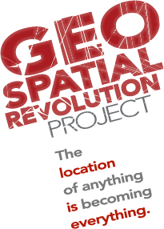

Continua l’appuntamento con Geospatial Revolution Project ad opera della Pennsylvania State University, che tanto sta appassionando anche la comunità geospaziale italiana.
Il terzo e penultimo episodio parla dell’uso dei GIS nei campi della diplomazia internazionale, delle operazioni militari, del lavoro delle forze dell’ordine e della sicurezza dei cittadini.
Il primo capitolo dal titolo “Mapping the Road to Peace” sostiene la necessità di avere gli “occhi della nazione” (USA) puntati sui “cattivi” e di utilizzare la geospatial intelligence per intercettare sul nascere le crisi internazionali. Ma soprattutto ricorda quello che è stato il primo impiego di successo delle tecnologie geospaziali nelle trattative diplomatiche durante il conflitto della Bosnia-Erzegovina, a metà degli anni Novanta.
Il secondo capitolo “Waging Modern War” si occupa di strategia e mission planning nella guerra moderna di precisione. Descrive l’impiego nelle missioni militari della tecnica “BuckEye Terrain Visualization” che raccoglie, elabora e trasmette dati del terreno ad elevata risoluzione mediante una camera elettro-ottica e un sensore LIDAR al fine di individuare la posizione degli IED (Improvised Explosive Devices), una continua minaccia anche per le missioni di pace molto difficile da scovare, come purtroppo ci ricorda la triste cronaca di questi giorni. Si parla anche di human geography, ovvero degli aspetti sociali, culturali, economici, ecc. calati direttamente sulla geografia fisica, la cui rappresentazione su mappa è in grado di facilitare la comprensione da parte dei militari della complessità di Paesi come l’Afghanistan.
Nel terzo capitolo “Serving & Protecting”, invece, si illustra come le tecnologie geospaziali possano costituire un valido strumento di supporto alle attività delle forze dell’ordine. Ad esempio in caso di una rapina in banca, è possibile calcolare in tempo reale le isocrone sulla rete stradale e quindi circoscrivere il perimetro entro il quale ricercare i criminali e posizionare i posti di blocco. E’ mostrato come l’impiego congiunto di un criminologo e dei GIS possa consentire l’individuazione della correlazione esistente tra gli hotspot di particolari tipologie di crimini avvenuti in una determinata area e la loro posizione, permettendo quindi una migliore dislocazione delle pattuglie a disposizione, specie se l’area da controllare è molto estesa. Si parla inoltre dell’uso del braccialetto elettronico in California come deterrente per chi ha commesso reati di natura sessuale e viene rilasciato in libertà condizionata.
L’ultimo capitolo “Staying Safe” ci pone un interrogativo: disporre di un GPS nel proprio telefono cellulare può essere utile in caso di emergenza per le forze dell’ordine, ma cosa succede se chi controlla è ad esempio uno stalker? Il progresso che scaturisce dall’uso delle tecnologie geospaziali presenta quindi un duplice aspetto. Da un lato, bisogna saper cogliere tutti i benefici che ne possono derivare. Dall’altro, occorre ricordarsi che la tecnologia può essere oggetto di abuso e quindi occorre saperla gestire.
the more data that’s available out there
the more transparent the world becomes
Oggi è possibile tenere traccia delle persone, che lo sappiano oppure no. Ma si tratta davvero di un’invasione della privacy o solo dell’affermazione di una tecnologia irreversibile e al tempo stesso sempre più irresistibile? Chissà cosa ne pensa la gente…
La materia è quella della tutela della privacy in ambito lavorativo: in sostanza, si tratta di stabilire quanto e a quali condizioni si possa spingere l’autonomia organizzativa del datore di lavoro quando vengono coinvolti i diritti primari del lavoratore.
Sempre più spesso l’esigenza di ottimizzare il lavoro aziendale spinge l’imprenditore a far uso di tutte quelle tecnologie che consentono di monitorare in tempo reale la dislocazione dei propri mezzi e dei dipendenti sul territorio. D’altro canto tali esigenze non possono violare i diritti inviolabili del lavoratore, il quale, nell’espletamento degli incarichi affidati, ha il pieno diritto a non veder violata la propria privacy.
In tal senso, nel presente articolo ci è sembrato utile e opportuno, non solo illustrare il caso concreto sottoposto all’Autorià Garante per la tutela dei dati personali, ma anche inserire in calce un piccolo vademecum degli adempimenti da rispettare.
Ci sia consentita un’ultima notazione di carattere generale (per altro di estrema attualità): al di là del rispetto formale della normativa – che deve essere un adempimento ineludibile, necessario e preliminare in ipotesi di tal genere – è sempre importante coinvolgere fattivamente i lavoratori nell’attività produttiva dell’azienda. Tale coinvolgimento può essere raggiunto solo attraverso una reale e adeguata comunicazione delle esigenze e delle strategie aziendali. Casi, come quello di seguito descritto, costituiscono, a volte e al di là del rispetto formale della normativa, l’indice di un malessere lavorativo che le norme, da sole, non possono eliminare.
Il caso trae origine da una segnalazione effettuata da un dipendente di una azienda telefonica al Garante per la Privacy, in merito all’installazione, a bordo di alcuni autoveicoli in dotazione al personale della stessa, di un sistema di localizzazione satellitare a tecnologia gps.
In particolar modo il dipendente evidenziava il fatto che tale installazione “sarebbe avvenuta in assenza di preventiva informativa ai lavoratori e senza spiegarne le funzioni né lo scopo del suo utilizzo. Peraltro, soltanto dopo diversi giorni la società avrebbe messo a conoscenza i dipendenti dell’avvenuta installazione dei dispositivi in esame, giustificandone l’utilizzo solo per scopi produttivi”.
L’azienda – che in relazione alla segnalazione effettuata aveva presentato le proprie controdeduzioni all’Authority circa la correttezza del proprio operato – aveva commissionato ad una società esterna di installare dei dispositivi che avrebbero consentito:
di localizzare i veicoli in dotazione in tempo reale su mappa cartografica (con possibilità, tra le altre, di ricerca dei mezzi più vicini ad un determinato indirizzo);
di verificare il percorso effettuato (con possibilità anche di controllare la velocità sostenuta, la percorrenza chilometrica del mezzo, i tempi di guida e le soste effettuate);
di controllare gli “eventi” verificatisi lungo il percorso (soste o spostamenti in orari non previsti, arrivo in aree predeterminate, ecc.), con eventuale ricezione di una comunicazione di avviso via sms;
di comunicare costantemente con il conducente;
di gestire i c.d. “punti di interesse” (indirizzi riferiti alla clientela, ai magazzini, agli impianti, ecc.), con possibilità di verificare mediante report sintetici le soste ivi effettuate e i relativi tempi di fermata;
di gestire la manutenzione ordinaria e straordinaria del veicolo.
Il caso in oggetto presenta diversi aspetti rilevanti sotto il profilo della materia giuslavoristica, commerciale e di tutela dei dati personali.
In questa sede riteniamo di soprassedere dalle, pur interessanti, considerazioni concernenti il diritto dell’imprenditore di gestire la propria impresa come meglio ritiene opportuno, e ciò anche con riferimento alla materiale organizzazione del lavoro dei propri dipendenti (artt. 2082, 2086, 2104 c.c.). Tale diritto, comunque, deve essere pur sempre contemperato con il rispetto dell’art. 4 della Legge 300/1970 (c.d. Statuto dei Lavoratori) il quale prevede che:
“È vietato l’uso di impianti audiovisivi e di altre apparecchiature per finalità di controllo a distanza dei lavoratori.
Gli impianti e le apparecchiature di controllo che siano richiesti da esigenze organizzative e produttive ovvero dalla sicurezza del lavoro, ma dai quali derivi al possibilità di controllo a distanza dell’attività dei lavoratori, possono essere installati soltanto previo accordo con le rappresentanze sindacali aziendali, oppure, in mancanza di queste, con la commissione interna. In difetto di accordo, su istanza del datore di lavoro, provvede l’ispettorato del lavoro, dettando ove occorra, le modalità per l’uso di tali impianti”.
Aspetti relativi all’attività di controllo del lavoro espletato dai dipendenti;
Aspetti relativi al diritto dei lavoratori a non essere lesi nella propria dignità, libertà e riservatezza.
Questi elementi sono stati sempre oggetto di un ampio dibattito legislativo e dottrinale.
Varia, numerosa e copiosa, nel corso del tempo, è stata la produzione giurisprudenziale circa la valutazione della liceità o meno del comportamento del datore di lavoro con riferimento al controllo aziendale relativo: all’installazione di apparecchi audiovisivi sui posti di lavoro, al monitoraggio delle connessioni internet sui pc aziendali, all’installazione di apparecchi di rilevazione delle telefonate ingiustificate, alla localizzazione dei propri dipendenti.
In generale possiamo dire che l’orientamento della Corte di Cassazione, cui sono giunti in ultimo grado i vari ricorsi, è stato quello di distinguere tra controllioffensivi e controllidifensivi.
Offensivo è il controllo atto ad una sorveglianza del dipendente che lede i diritti primari dell’individuo; lecito, invece, sarebbe il c.d. controllo difensivo. All’interno di quest’ultima categoria la giurisprudenza ha distinto – con varie ed oscillanti pronunce -tra:
controlli diretti ad accertare possibili comportamenti illeciti dei lavoratori in relazione all’esatto adempimento delle obbligazioni lavorative;
controlli che riguardano la tutela di beni estranei al rapporto lavorativo.
Tuttavia il caso in questione si muove su una linea di confine tra l’ottimizzazione del lavoro ed il controllo dei lavoratori.
Infatti, come sopra evidenziato, i dispositivi gps in questione non solo erano montati sui veicoli aziendali e non sulla persona dei lavoratori, ma, inoltre, le finalità di tale installazione era quella di una migliore e più efficiente organizzazione del lavoro.
Per completezza espositiva, riportiamo le conclusioni del Garante (il cui provvedimento – doc. web n. 1763071 – è reperibile qui), il quale ha censurato il comportamento dell’azienda solo in relazione al non corretto rispetto dell’iter procedimentale atto alla installazione dei suddetti dispositivi gps, ritenendo, invece legittime le finalità del montaggio di tali apparecchiature sui veicoli aziendali.
Tale precisazione è dovuta a fronte di titoli delle rassegne giornalistiche e dei blog più o meno specializzati, del tenore: “bloccata la localizzazione dei dipendenti con GPS”.
Vogliamo, allora, fornire una breve sintesi degli adempimenti da conoscere e rispettare in casi analoghi a quello esaminato:
1. Effettuare una istanza al Garante (ufficio territoriale competente) di verifica e di autorizzazione al trattamento dei dati.
L’art. 17 D.Lgs 196/2003, infatti prevede:
Trattamento che presenta rischi specifici
1. Il trattamento dei dati diversi da quelli sensibili e giudiziari che presenta rischi specifici per i diritti e le libertà fondamentali, nonché per la dignità dell’interessato, in relazione alla natura dei dati o alle modalità del trattamento o agli effetti che può determinare, è ammesso nel rispetto di misure ed accorgimenti a garanzia dell’interessato, ove prescritti.
2. Le misure e gli accorgimenti di cui al comma 1 sono prescritti dal Garante in applicazione dei principi sanciti dal presente codice, nell’ambito di una verifica preliminare all’inizio del trattamento, effettuata anche in relazione a determinate categorie di titolari o di trattamenti, anche a seguito di un interpello del titolare.
In tal senso è necessario corredare la richiesta con tutti gli elementi che caratterizzano il trattamento. Da non sottovalutare la determinazione dei tempi di conservazione dei dati acquisiti per il tramite dei dispositivi, commisurandoli, ove necessario, alle effettive necessità di conservazione in rapporto alle specifiche finalità concretamente perseguite. E’ opportuno segnalare che, qualora si tratti di dispositivi gps installati su mezzi aziendali, oltre alle specifiche e tecniche esigenze temporali di conservazione dei dati, vi sono da valutare i tempi per la notifica da parte dell’Autorità delle infrazioni. In tal senso ricordiamo che La multa stradale deve essere notificata al trasgressore (o presunto tale dall’Autorità) entro 90 giorni (in caso di residenza in Italia)
2. Notificare al Garante il trattamento di dati personali cui intende procedere.
In particolar modo con riferimento agli adempimenti previsti dagli artt. 37 e ss del titolo VI del Decreto legislativo 30 giugno 2003, n. 196. L’art. 37 cit. infatti prevede che il titolare notifica al Garante il trattamento di dati personali cui intende procedere, solo se il trattamento riguarda dati genetici, biometrici o dati che indicano la posizione geografica di persone od oggetti mediante una rete di comunicazione elettronica.
3. Ottenuta l’autorizzazione, procedere alla stipula di un accordo con le rappresentanze sindacale Aziendali ovvero, in caso di assenza di queste ottenere l’autorizzazione dell’Ispettorato del lavoro.
4. Effettuare una corretta e completa informativa ai lavoratori nella quale devono essere riportate le finalità del trattamento dei dati localizzazione;
5. Il consenso dei lavoratori al detto trattamento, seppur auspicabile, non risulta necessario.
Infatti, secondo quanto previsto dall’art. 24, comma 1, lettera g) del Decreto legislativo 30 giugno 2003, n. 196 il quale prevede che Il consenso non è richiesto, oltre che nei casi previsti nella Parte II, quando il trattamento è necessario, nei casi individuati dal Garante sulla base dei principi sanciti dalla legge, per perseguire un legittimo interesse del titolare o di un terzo destinatario dei dati, anche in riferimento all’attività di gruppi bancari e di società controllate o collegate, qualora non prevalgano i diritti e le libertà fondamentali, la dignità o un legittimo interesse dell’interessato (c.d bilanciamento degli interessi di cui parlavamo nel corpo del presente articolo).
6. Designare gli incaricati del trattamento.
Ovvero i soggetti che, in ragione delle mansioni svolte, risultino effettivamente legittimati ad accedere alle informazioni acquisite per il tramite dei dispositivi di localizzazione satellitare
7. Adottare tutte le necessarie misure di sicurezza previste dal Codice della Privacy.
E ciò con particolare riferimento agli artt. da 33 ( Capo II – Misure minime di sicurezza) a 37 (Titolo VI – Adempimenti) ed all’Allegato B, D.Lgs. 196/2003 (disciplinare tencico in materia di misure minime di sicurezza).
I giapponesi hanno una “visione” del mondo molto diversa da quella europea; è normale, è sano, ed è un bene. Il video sottostante ne è l’ennesima prova.
In due minuti, in stop motion , viene illustrato cosa ci sia alle spalle di Google Street View. Con una immediatezza, una leggerezza e qualità superiori alla media.
E’ un filmato che trovate nelle pagine ufficiali (hanno rimosso la pagina, ma è possibile vedere la versione cached della pagina) di Google Giappone, ed è la prova di quanto sia importante anche per questo stato il tema della privacy.
L’Autorità Garante per la Privacy si è espressa in modo favorevole in relazione alla possibilità di utilizzo di un sistema di geolocalizzazione dei mezzi da parte di una società privata che gestisce il trasporto pubblico di passeggeri.
Già nel 2003 la possibilità di localizzare i mezzi pubblici in circolazione, per poter intervenire celermente in caso di guasti o sinistri, abbattendo i costi di gestione, era stato oggetto di una convenzione fra TIM e la Compagnia dei Trasporti Pubblici (CTP) di Napoli, una delle prime a dotarsi del così detto sistema FleetNET, che, grazie alla rete GPRS , permette la localizzazione e il controllo a distanza dei mezzi in servizio (e che avrebbe dovuto consentire, in futuro, anche nuovi servizi di informazione ai cittadini).
La questione sottoposta al Garante per la protezione dei dati personali, nel caso che ci occupa, invece, ha degli aspetti ulteriori rispetto alla, per così dire, semplice localizzazione dei mezzi pubblici.
Infatti, il sistema, messo a punto dalla Digigroup s.r.l. – gestore esterno-, dispone, oltre che di un localizzatore Gps, anche di ulteriori dispositivi che determinano stile e condotta di guida del conducente (pressione sui freni, velocità e anche altri parametri rilevati in occasione di sinistri attraverso una apparecchiatura tipo scatola nera installata su ciascun veicolo).
In buona sostanza il sistema GPS consentirebbe di:
localizzare geograficamente i propri veicoli su una mappa cartografica e di conoscerne velocità e direzione;
verificare l’osservanza, da parte dei conducenti, della normativa in tema di circolazione stradale e delle prescrizioni aziendali;
valutare la sicurezza e il “comfort” della condotta di guida degli autisti;
analizzare il consumo di carburante (e l’efficienza energetica) nella fase di marcia;
ricostruire la dinamica di eventuali sinistri;
riscontrare anomalie tecnico-meccaniche dei veicoli.
Come sopra evidenziato, alcuni dei dati raccolti verrebbero utilizzati per monitorare il rispetto del codice della strada da parte degli autisti ed eventualmente per trattamenti economici premianti nei confronti dei conducenti che garantiscano una guida qualitativamente migliore degli altri.
Con riferimento a quest’ultimo punto, è evidente, che i dati non potranno essere trattati solamente come valore medio complessivo e non basati su singoli lavoratori, così come, invece è stato riportato nella circolare del Garante.
La stessa acquisizione di elementi volti alla ricostruzione di un sinistro (attraverso il cosiddetto “black box”), ritenuta lecita dall’Autorità, dovrebbe porre una serie di problematiche in relazione alla loro efficacia probatoria nel corso di un giudizio.
Ulteriori problematiche si pongono in relazione alla circostanza che il sistema determina effettivamente un controllo a distanza dei lavoratori, ancorché giustificato da esigenze organizzative e produttive della società (art. 4, secondo comma, legge n. 300/1970). In tal senso è stato previsto che dovranno essere rispettate le garanzie procedurali previste, ovvero l’accordo sindacale o l’autorizzazione della Direzione provinciale del lavoro.
Ricordiamo che in tema di liceità di tali dispositivi di controllo a distanza si era espresso favorevolmente il decreto del Ministero del lavoro e delle politiche sociali, Direzione generale della tutela delle condizioni di lavoro, Divisione IV, 24 giugno 2004, in tema di installazione di impianti di controllo satellitare su autovetture di pronto intervento di un’impresa erogatrice di gas.
Il Garante ha stabilito, inoltre, che siano fornite agli interessati informazioni dettagliate sulla natura dei dati trattati e sulle caratteristiche del sistema e che l’accesso ai dati dovrà essere consentito ai soli incaricati della società. L’Autorità ha sottolineato, infine, che le informazioni ricavate da tale sistema di localizzazione potranno essere utilizzate a fini di sicurezza e miglioramento del servizio e conservate per il tempo necessario a perseguire tale finalità.
Lezioni online per spiegare scienza e tecnologia Oilproject organizza con l’Istituto Italiano di Tecnologia una serie di lezioni divulgative su neuroscienze, nanotecnologie, farmacologia e macchine intelligenti, per raccontare al grande pubblico lo stato dell’arte della ricerca di base e applicata. Qui tutti i dettagli. Leggi tutto... (0)
Il GFOSS Day 2011 è a Foggia I prossimi 24 e 25 novembre l’Università degli Studi di Foggia ospiterà il GFOSS DAY 2011, organizzato come di consueto dall’Associazione Italiana per l’Informazione Geografica Libera GFOSS.it Leggi tutto... (1)
Mappali, denunciali e... tassa.li Tassa.li è una interessante startup realizzata da un gruppo di giovani tecnologi, con l’intento di rendere facile la denuncia di esercizi commerciali che non rilasciano il regolare scontrino fiscale. E in un periodo nero come questo, molta gente avrà una gran voglia di partecipare. Grazie a una applicazione disponibile sia per iOS che Android, è infatti possibile in pochi clic geotaggare l’esercizio e riportare la somma dello scontrino non emesso. Il tutto in maniera assolutamente anonima. E questi ragazzi dimostrano di vedere molto lontano, perché presto rilasceranno i dati raccolti in forma totalmente aperta e libera. (7)
TANTO non rappresenta una testata giornalistica ai sensi della legge n. 62 del 7.03.2001, in quanto non viene aggiornato con una precisa e determinata periodicita'. Pertanto, in alcun modo puo' considerarsi un prodotto editoriale.